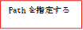
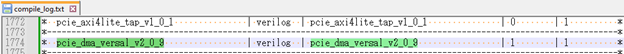

การจำลองด้วย Modelsim
1. การจำลองด้วย Modelsim
โดยปกติแล้ว Vivado จะใช้ xsim เป็นเครื่องมือจำลองเริ่มต้น แต่ก็มีวิธีการจำลองด้วย Modelsim เช่นกัน ขั้นตอนการจำลองด้วย Modelsim มีดังนี้
1． คอมไพล์ไลบรารีของ Xilinx ด้วย Modelsim
2． สร้างสคริปต์การจำลองบน Vivado
3． เปิด Modelsim และทำการจำลอง
4． แก้ไข/สร้าง test_bench โดยอิงจากข้อ ③ แล้วทำการจำลอง
※ เนื่องจาก AXI Verification IP จำเป็นต้องใช้ใบอนุญาต เมื่อทำการจำลองด้วย Modelsim จะเกิดข้อผิดพลาดเกี่ยวกับใบอนุญาต（หากไม่มีใบอนุญาต Modelsim แบบเสียเงิน จะไม่สามารถจำลอง AXI Verification IP ได้）
1.1. การคอมไพล์ไลบรารีของ Xilinx ด้วย Vivado
เปิด Vivado แล้วคลิกที่ Tool → Compile Simulation Libraries

ระบุตำแหน่งของ Compiled library location และ Simulator executable path แล้วคลิก 「Compile」

เมื่อคอมไพล์เสร็จสิ้น ไฟล์ modelsim.ini จะถูกสร้างขึ้นด้วย (เป็นสคริปต์เริ่มต้นสำหรับโหลดไลบรารี Xilinx เมื่อเปิด Modelsim)

※ 1. การคอมไพล์ IP ทั้งหมดของ Xilinx ใช้เวลานาน (ประมาณ 1 ชั่วโมง)
※ 2. จากการทดลองด้วย modelsim 10.5b(Quartus 17.1) และ Vivado 2022.1 พบว่ามีโมดูลที่คอมไพล์ไม่ผ่าน 4 ตัว หากการออกแบบใน Vivado ไม่ได้ใช้โมดูลเหล่านั้น ก็ไม่น่าจะมีปัญหา


※ 3. หน้าจอในกรณีที่ระบุ Path ของ GCC

※ 4. AXI BFM จำเป็นต้องใช้ใบอนุญาตหรือไม่?
1.2. การจำลองด้วย Modelsim (สำหรับดีไซน์ที่ไม่มี Xilinx VIP)
1． การส่งออกการจำลองบน Vivado
สร้างฟิลเตอร์ชื่อ 「sim」 ในโปรเจกต์ แล้วคลิก 「Export Simulation」 ใน Vivado

2． การติดตั้งการจำลอง
ภายใต้ 「sim」
do compile.do
do simulate.do
※ เพื่อไม่ให้ modelsim ปิดตัวเองหลังจากการจำลองเสร็จสิ้น ให้ใส่คอมเมนต์หน้าคำสั่ง quit -force
※ หากเป็นดีไซน์ที่มี Xilinx VIP จะเกิดข้อผิดพลาดดังภาพด้านล่างและไม่สามารถทำการจำลองได้

1.3. การรันการจำลองด้วย UVVM + Modelsim


xil_defaultlib uvvm_util.tb_axs_iomap xil_defaultlib.glbl
cd d:/xilinx/modelsim/AXI_Basics_3/UVVM_Light-master/sim/
do ./compile_and_run_demo_tb.do
do ./sim.do
1.4. วิธีการจำลองดีไซน์ที่มี Zynq ด้วย UVVM + Modelsim
1． การรับซอร์สโค้ด UVVM

คัดลอกไฟล์ modelsim.ini (สำหรับโหลดไลบรารี Xilinx) ไปยัง UVVM_Light-master\nsim

2． การส่งออกการจำลองบน Vivado
สร้างฟิลเตอร์ชื่อ 「sim」 ในโปรเจกต์ แล้วคลิก 「Export Simulation」 ใน Vivado

3． การแก้ไขซอร์สโค้ด
- Pynq-Z2\sim\compile.do
Ø เพิ่ม vlib modelsim_lib
Ø ลบส่วนของ include vip
Ø ลบส่วนคอมไพล์ของ base_ps7_0_0 (จะใช้เวอร์ชันที่สร้างเอง (พร้อม UVVM) แทน)
Ø แก้ไข tb_prj_top.v และ glbl.v ดังนี้
"../../UVVM_Light-master/tb/tb_prj_top.v"
"../../sim/modelsim/glbl.v"
ในกรณีของการจำลองด้วย Vivado (Xsim) ไฟล์ tb_prj_top.v จะใช้ Xilinx VIP เพื่อควบคุมบัส AXI แต่ในครั้งนี้เราจะใช้ UVVM ในการควบคุม ดังนั้นให้คอมเมนต์ส่วนของ Xilinx VIP ทั้งหมดออก

- Pynq-Z2\UVVM_Light-master\sim\ compile_and_run_demo_tb.do
เพิ่มเนื้อหาต่อไปนี้
do ../../sim/modelsim/compile.do
vlib uvvm_util
eval vcom $compdirectives -work xil_defaultlib ../tb/base_ps7_0_0.vhd

※ ในไฟล์ base_ps7_0_0.vhd เองนั้น จะมีลอจิกสำหรับควบคุมของ UVVM อยู่
※ วางไฟล์ base_ps7_0_0.vhd และ tb_prj_top.v ไว้ที่ Pynq-Z2\UVVM_Light-master\tb\

- สร้างไฟล์ sim.do ใน Pynq-Z2\UVVM_Light-master\sim
คัดลอกคำสั่ง vsim ที่เขียนไว้ใน Pynq-Z2\sim\simulate.do จากนั้นลบ library ที่มี vip ออก แล้วบันทึกไปยัง Pynq-Z2\UVVM_Light-master\sim\sim.do
※ หากใส่ vip library เข้าไปด้วย คาดว่าน่าจะเกิดข้อผิดพลาดเกี่ยวกับใบอนุญาตตอนทำการจำลอง

4． การจำลองด้วย Modelsim
เปิด Modelsim
cd d:/xilinx/modelsim/Pynq-Z2/UVVM_Light-master/sim/
do ./compile_and_run_demo_tb.do
do ./sim.do